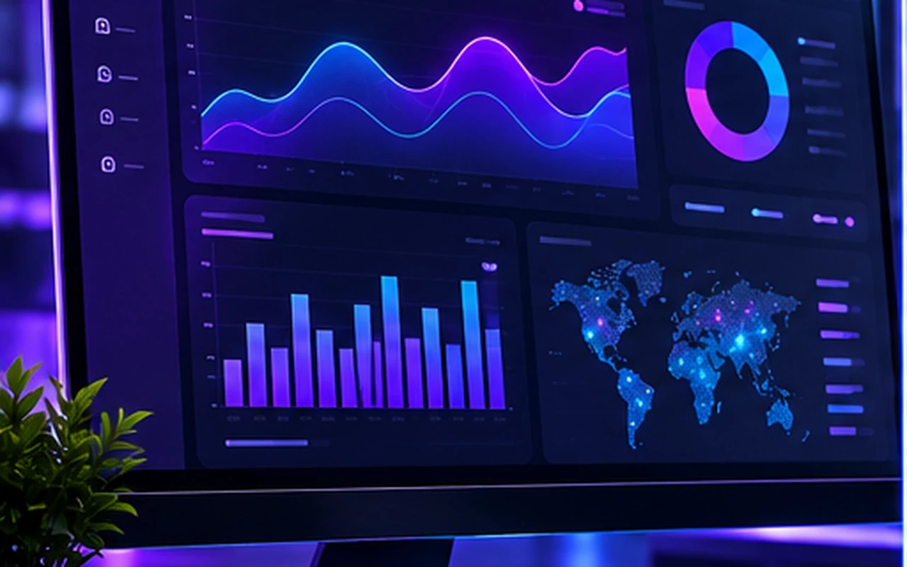

Thoughtful UX
Interfaces that feel clear, intuitive and purposeful.
I'm Hassan Bashir — a Full Stack Developer crafting reliable web applications, powerful backends and intelligent digital products.
const developer = { name: 'Hassan', focus: 'Full Stack', mindset: 'Build better' };

AI / DATA · GITHUBPulsemetricsAI↗ WEB APP · GITHUBAuraTech E-commerce↗
WEB DEVELOPMENT · GITHUBBlog Website↗
WEB APP · GITHUBAuraTech E-commerce↗
WEB DEVELOPMENT · GITHUBBlog Website↗
AI-generated visual previews · Open each project to view its source repository
I enjoy turning complex problems into simple, useful experiences. From the first sketch to the final deployment, I care about the details that make digital products feel effortless.
My interests span frontend experiences, backend architecture and applied AI/ML. I believe the best solutions balance thoughtful engineering, clear communication and a genuine understanding of the people using them.
Have a project in mind? Let's build it ↗Interfaces that feel clear, intuitive and purposeful.
Maintainable code, reliable systems and clean architecture.
Exploring new tools and better ways to solve problems.
From a focused feature to a complete product, let's turn your requirements into a solution that works.
Responsive web applications with polished frontend experiences and dependable server-side functionality.
Structured APIs, database integration, authentication and backend features designed to scale.
Practical machine-learning integrations and intelligent features shaped around real use cases.
Modern, mobile-first interfaces that bring product ideas to life across screen sizes.
A few project directions that reflect the kind of problems I love solving. Replace these sample cards with your live work and case studies.
Explore my AI-focused project repository and its implementation details on GitHub.
WEB PRODUCT / VISUAL PREVIEW↗
A frontend application repository. Visit GitHub to review the source code.
A blog website repository described as functional and tested. Explore the project on GitHub.
✳ Project links point to repositories visible on your GitHub profile. The images are AI-generated visual previews, not screenshots of the live applications. Replace them with genuine product screenshots when available.
The technologies I'm focused on using to build useful, dependable digital experiences.
Technology is a tool. Understanding the problem is where every good build begins.
Have an idea, a challenge or a project you'd like to discuss? Tell me what you're building.